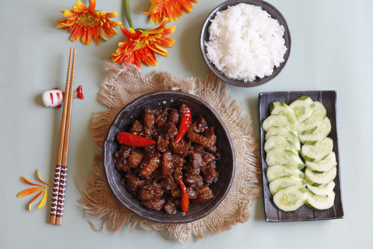

Thit Kho Mam Ruoc (Pork with shrimp paste)

Description
It was a meal that represented all the simple things in life. With just some meat, lemongrass and shrimp paste, Thit Kho Mam Ruoc became a humble reminder of those values.
Ingredients
- Oil
- Pork Belly
- Lemongrass
- Shrimp Paste
- Chicken Bouillon Powder
- Chili
- Sugar
- Garlic
- Ginger
- Red Shallot
Steps
- Heat up a wok or pan and cook the meat on medium-high heat with the chicken bouillon powder for 15 minutes or until the pieces become golden and crispy.
- Transfer onto a plate for later, keeping the oil in the wok.
- Bring the heat to medium and pour the lemongrass, chili, garlic, ginger and shallots. Cook for 2 minutes or until brown.
- Add the shrimp paste in and stir until well combined for 3 minutes.
- Turn the heat up to high and add the pork back in. Stir everything together for 5 minutes.
- Serve everything immediately with a side of freshly sliced cucumbers and hot rice!